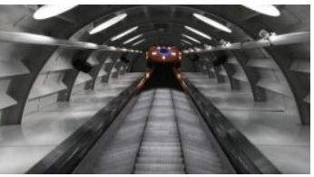
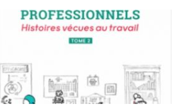
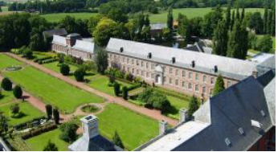
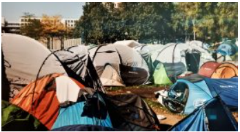
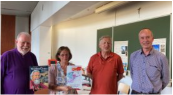
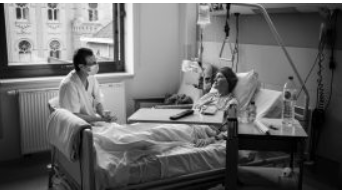
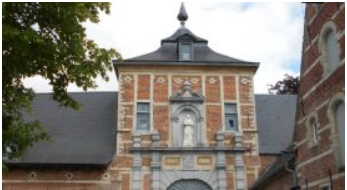

Publié le 10 juin 2021 par Redaction - Modifié le 10 juin 2021 - 5 minutes

Les mois d’été sont propices au voyage… La STIB, Société des Transports Intercommunaux de Bruxelles, s’est associée à un projet inédit en ses murs. Place aux gouttes de poésie – poëtische druppels. L’initiative de chuchoter de la poésie dans l’espace public était prévue avant le cataclysme national des inondations. En ces temps de deuil, la création poétique aura d’autant plus de prix. Derrière cette intervention bilingue se trouve le romancier belge Grégoire Polet. Le concept… [Lire l’article]
Publié le 28 juin 2021 par Angélique Tasiaux - Modifié le 28 juin 2021 - 2 minutes

Après un premier tome consacré plus spécifiquement au travail dans les domaines de l’école, du soin et du commerce, Dominique Costermans et Régine Vandamme reviennent avec un second volume dédié au bureau et au monde de l’entreprise. A la lecture de tous ces témoignages collectés, la sociologue et politologue Isabelle Ferreras voit une indication pressante : « il est temps de changer l’organisation du monde du travail afin qu’il puisse rencontrer les attentes de ceux qui…[Lire l’article]
Publié le 25 juin 2021 par Redaction - Modifié le 28 juin 2021 - 2 minutes

Pour son exposition 2021, le Centre d’Histoire et d’Art Sacré en Hainaut (CHASHa asbl) a choisi de présenter le trésor de l’Abbaye de Bonne-Espérance, demeuré intact à travers les siècles. De ce dimanche 27 juin au 10 octobre prochain, l’histoire et le sens des oeuvres exposées seront mis en valeur à travers une visite guidée de ce patrimoine culturel et religieux exceptionnel.[Lire l’article]
Publié le 24 juin 2021 par Redaction - Modifié le 24 juin 2021 - 2 minutes
A la recherche de sa tante disparue à la suite de l’Exposition 58, une jeune Congolaise débarque 45 ans plus tard à Bruxelles… Avril 1958. Le sous-commissaire de L’Exposition Universelle, Robert Dumont, n’a pas d’autre choix que d’accepter la proposition du Comité responsable du plus grand événement de l’après-guerre: « Exhiber cinq ou six Nègres en bonne santé, robustes, habiles de leurs mains qui sachent chanter et danser, et autant de Négresses bien en chair qui…[Lire l’article]
Publié le 18 juin 2021 par Vincent Delcorps - Modifié le 21 juin 2021 - 2 minutes

Ce 20 juin, nous célébrons la journée mondiale des réfugiés. L’occasion de découvrir « Une fuite sans fin, (jusqu’) en Europe », la dernière exposition du MigratieMuseumMigration.[Lire l’article]
Publié le 17 juin 2021 par Redaction - Modifié le 17 juin 2021 - 2 minutes
Accompagnons ces deux sœurs de 1915 à 1939 pour entrer dans l’Histoire dont une page nous deviendra sensiblement – et terriblement – plus proche. Ian Manook, alias Patrick Manoukian, s’est inspiré du vécu de sa grand-mère. Ce sont les yeux d’Araxie et les mille sensations perçues par Hagaïnouch, la cadette rendue aveugle qui nous font vivre la fuite, l’exode, les humiliations, les menaces, les exactions, les massacres, la survie et enfin, enfin la vie! Tout…[Lire l’article]
Publié le 17 juin 2021 par Sarah Poucet - Modifié le 17 juin 2021 - 2 minutes

Le dessinateur belge a remporté ce prix pour son album « Mgr Vladimir Ghika ». Ce samedi 12 juin, l’Assemblée Générale du CRIABD (Centre Religieux d’information et d’Analyse de la Bande Dessinée) a décerné le Prix Européen Gabriel de la meilleure BD chrétienne au dessinateur belge Gaëtan Evrard pour l’album « Mgr Vladimir Ghika » (éditions du Triomphe, scénario de Louis-Bernard Koch). Vladimir Ghika était un orthodoxe roumain qui s’est ensuite converti au catholicisme, avant de devenir prêtre. Il…[Lire l’article]
Publié le 16 juin 2021 par Anne-Françoise de Beaudrap - Modifié le 16 juin 2021 - 2 minutes

En 48 pages, l’ouvrage « Être là » présente un témoignage précieux, en photographies avec quelques textes, sur la présence des frères et sœurs de Tibériade auprès des services Covid à l’hôpital de Jolimont. Rencontre avec l’artiste.[Lire l’article]
Publié le 14 juin 2021 par Angélique Tasiaux - Modifié le 16 juin 2021 - 4 minutes

Le domaine de l’abbaye de Parc vaut assurément le détour. Restauré avec des moyens financiers conséquents, l’ensemble restitue avec éclat les pièces anciennes et la magnificence de l’abbaye des Prémontrés. Deux expositions y sont actuellement présentées. Installée à une demi-heure à pied du centre de Leuven, l’abbaye de Parc (et non du Parc) est un joyau, traité depuis quelques années comme tel par les dirigeants politiques qui ont saisi l’importance de ce patrimoine architectural et…[Lire l’article]